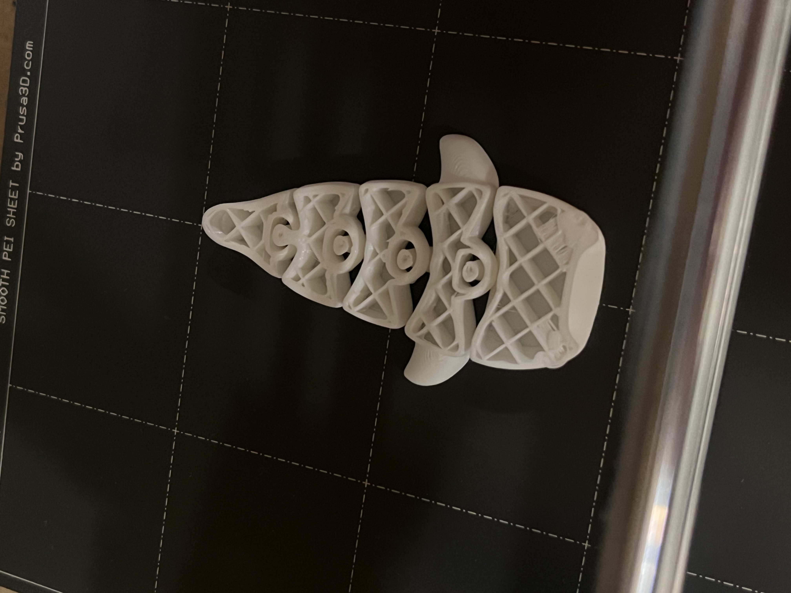
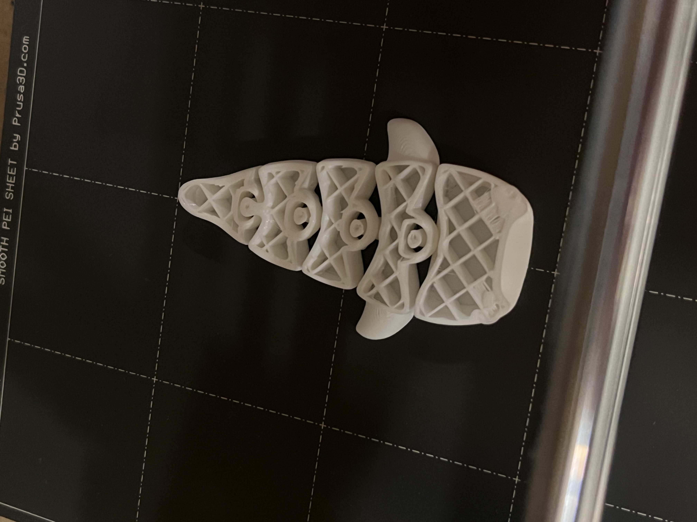

3D Printed Whale
Process:
- Browsing on printables to find a print that will push the limit of the printer.
- Download the nametag STL file.
- Slice the whale body model into two parts in order to print it with different colors.
- Click "slice now" in Prusa Slicer, then export the G-code after editing the print settings. The G-code file: Download G-code File
- Rename my G-code file and export it to a flash disk.
- Request a job number and write it on a sticky note.
- Insert the flash disk into the printer. Choose my file to print. Stick my note beside it.
- Change the material from white to blue when the first part of whale body is finished printing.
- Printing finished. Remove the whale from the printer bed.
 

Reflection:
- The "edge case" did not fail.
- The reason is that the printer actually can print out the joints between whale's body sections, which is over my suspection..
- Slice the goal of part2 is to test the printer's limit,
- I would need to find another print.